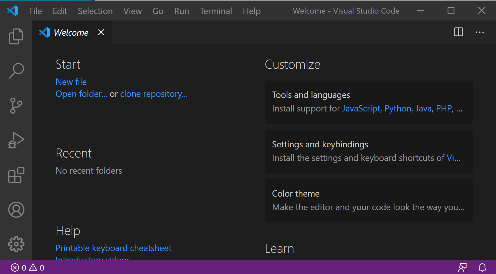

Editors¶
Visual Studio Installation¶
Download Visual Studio Code and install it.
Configuration¶
Click on Customize > Tools and languages > python to install support to python.
Source control¶
If you have already already cloned the scpy repository, you can open the corresponding folder.
Click on the Source control icons on the left bar and then open folder.
If your repository is not yet cloned you can also do it from here (use Clone Repository button).
If git is not yet installed you can also do it from here (install git)
Once git is installed you need to restart VSCode.
Start editing¶
once you have selected the spectrochempy folder you should get something like this, where you have access to all components of the project.